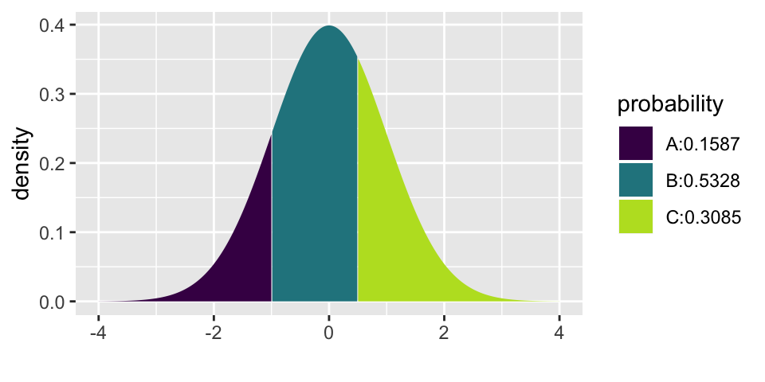
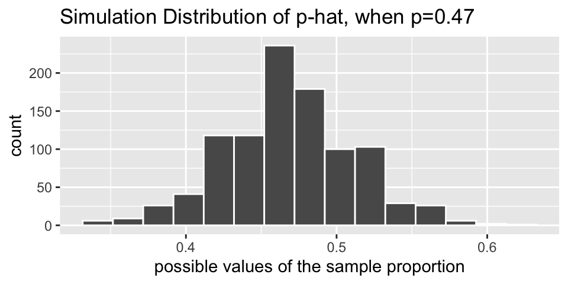
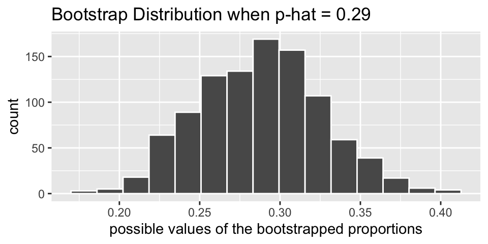

Chapter 3 Foundations for Inference
3.1 1/23/20 Agenda
- Example: gender discrimination
inferagain- Hypothesis testing structure
3.2 Example: Gender Discrimination
We consider a study investigating gender discrimination in the 1970s, which is set in the context of personnel decisions within a bank.1 The research question we hope to answer is, “Are females discriminated against in promotion decisions made by male managers?”
The participants in this study were 48 male bank supervisors attending a management institute at the University of North Carolina in 1972. They were asked to assume the role of the personnel director of a bank and were given a personnel file to judge whether the person should be promoted to a branch manager position. The files given to the participants were identical, except that half of them indicated the candidate was male and the other half indicated the candidate was female. These files were randomly assigned to the subjects.
For each supervisor we recorded the gender associated with the assigned file and the promotion decision. Using the results of the study summarized in Table 2.1, we would like to evaluate if females are unfairly discriminated against in promotion decisions. In this study, a smaller proportion of females are promoted than males (0.583 versus 0.875), but it is unclear whether the difference provides convincing evidence that females are unfairly discriminated against. (Diez, Barr, and Çetinkaya-Rundel (2014), pg 61)
| decision | ||||
|---|---|---|---|---|
| promoted | not promoted | total | ||
| male | 21 | 3 | 24 | |
| female | 14 | 10 | 24 | |
| total | 35 | 13 | 48 |
Always Ask
- What are the observational units?
- supervisor
- What are the variables? What type of variables?
- whether the resume was male or female (categorical)
- decision to promote or not promote (categorical)
- What is the statistic?
- \(\hat{p}_m - \hat{p}_f\) = 21/24 - 14/24 = 0.292 (the difference between the proportion of men who were promoted and the proportion of women who were promoted)
- What is the parameter?
- \(p_m - p_f\) = the true difference in the probability of a man being promoted minus the probability of a woman being promoted.
Hypotheses
H0: Null hypothesis. The variables gender and decision are independent. They have no relationship, and therefore any observed difference between the proportion of males and females who were promoted is due to chance.
HA: Alternative hypothesis. The variables gender and decision are not independent. Any observed difference between the proportion of males and females who were promoted is not due to chance.
Computation
library(infer)
# to control the randomness
set.seed(47)
# first create a data frame with the discrimination data
discrim <- data.frame(gender = c(rep("male", 24), rep("female", 24)),
decision = c(rep("promote", 21), rep("not", 3),
rep("promote", 14), rep("not", 10)))
discrim %>% head()## gender decision
## 1 male promote
## 2 male promote
## 3 male promote
## 4 male promote
## 5 male promote
## 6 male promote# then find the difference in proportion who are promoted
(diff_obs <- discrim %>%
specify(decision ~ gender, success = "promote") %>%
calculate(stat = "diff in props", order = c("male", "female")) )## # A tibble: 1 x 1
## stat
## <dbl>
## 1 0.292# now apply the infer framework to get the null differences in proportions
null_discrim <- discrim %>%
specify(decision ~ gender, success = "promote") %>%
hypothesize(null = "independence") %>%
generate(reps = 10000, type = "permute") %>%
calculate(stat = "diff in props", order = c("male", "female"))
# then visualize the null sampling distribution & p-value
visualize(null_discrim, bins = 10) +
shade_p_value(obs_stat = diff_obs, direction = "greater")
# calculate the actual p-value
null_discrim %>%
get_p_value(obs_stat = diff_obs, direction = "greater")## # A tibble: 1 x 1
## p_value
## <dbl>
## 1 0.026Logic for what we believe
We know that the study was an experiment, so there should be no systematic differences between the group who received “male” applications and “female” applications.
We’ve ruled out random chance as the reason for the huge difference in proportions. (We reject the null hypothesis.) if we lived in the null reality, we’d only see data like these about 2.5% of the time.
We conclude that gender and decision are not independent. That is, knowing the gender changes the probability of promotion.
3.3 Structure of Hypothesis testing
3.3.1 Hypotheses
Hypothesis Testing compares data to the expectation of a specific null hypothesis. If the data are unusual, assuming that the null hypothesis is true, then the null hypothesis is rejected.
The Null Hypothesis, \(H_0\), is a specific statement about a population made for the purposes of argument. A good null hypothesis is a statement that would be interesting to reject.
The Alternative Hypothesis, \(H_A\), is a specific statement about a population that is in the researcher’s interest to demonstrate. Typically, the alternative hypothesis contains all the values of the population that are not included in the null hypothesis.
In a two-sided (or two-tailed) test, the alternative hypothesis includes values on both sides of the value specified by the null hypothesis.
In a one-sided (or one-tailed) test, the alternative hypothesis includes parameter values on only one side of the value specified by the null hypothesis. \(H_0\) is rejected only if the data depart from it in the direction stated by \(H_A\).
3.3.2 Other pieces of the process
A statistic is a numerical measurement we get from the sample, a function of the data. [Also sometimes called an estimate.]
A parameter is a numerical measurement of the population. We never know the true value of the parameter.
The test statistic is a quantity calculated from the data that is used to evaluate how compatible the data are with the result expected under the null hypothesis.
The null distribution is the sampling distribution of outcomes for a test statistic under the assumption that the null hypothesis is true.
The p-value is the probability of obtaining the data (or data showing as great or greater difference from the null hypothesis) if the null hypothesis is true. The p-value is a number calculated from the dataset.
Examples of Hypotheses
Identify whether each of the following statements is more appropriate as the null hypothesis or as the alternative hypothesis in a test:
The number of hours preschool children spend watching TV affects how they behave with other children when at day care. Alternative
Most genetic mutations are deleterious. Alternative
A diet of fast foods has no effect on liver function. Null
Cigarette smoking influences risk of suicide. Alternative
Growth rates of forest trees are unaffected by increases in carbon dioxide levels in the atmosphere. Null
The number of hours that grade-school children spend doing homework predicts their future success on standardized tests. Alternative
King cheetahs on average run the same speed as standard spotted cheetahs. Null
The risk of facial clefts is equal for babies born to mothers who take folic acid supplements compared with those from mothers who do not. Null
The mean length of African elephant tusks has changed over the last 100 years. Alternative
Caffeine intake during pregnancy affects mean birth weight. Alternative
What is an Alternative Hypothesis?
Consider the brief video from the movie Slacker, an early movie by Richard Linklater (director of Boyhood, School of Rock, Before Sunrise, etc.). You can view the video here from starting at 2:22 and ending at 4:30: https://www.youtube.com/watch?v=b-U_I1DCGEY
In the video, a rider in the back of a taxi (played by Linklater himself) muses about alternate realities that could have happened as he arrived in Austin on the bus. What if instead of taking a taxi, he had found a ride with a woman at the bus station? He could have take a different road into a different alternate reality, and in that reality his current reality would be an alternate reality. And so on.
What is the point? Why did we see the video? How does it relate the to the material from class? What is the relationship to sampling distributions?
3.3.3 All together: structure of a hypothesis test
- decide on a research question (which will determine the test)
- collect data, specify the variables of interest
- state the null (and alternative) hypothesis values (often statements about parameters)
- the null claim is the science we want to reject
- the alternative claim is the science we want to prove
- generate a (null) sampling distribution to describe the variability of the statistic that was calculated along the way
- visualize the distribution of the statistics under the null model
- get_p_value to measure the consistency of the observed statistic and the possible values of the statistic under the null model
- make a conclusion using words that describe the research setting
3.4 1/28/20 Agenda
- Central Limit Theorem
- Mathematical approximation for the distribution of one sample proportion
3.5 Normal Model
3.5.1 Central Limit Therm
Example: Reese’s Pieces2
As with many of the examples, the Reese’s Pieces example comes from Chance and Rossman (2018). The example focuses on how the samples of orange Reese’s Pieces vary from sample to sample. Today we aren’t particularly interested in a specific research question, instead we are trying to understand the details of the model which describes how \(\hat{p}\) varies from sample to sample. [Spoiler: the distribution is going to look like a bell! and the mathematical model which describes the variability is called the normal distribution.]
Notes from the applet: http://www.rossmanchance.com/applets/OneProp/OneProp.htm?candy=1
- How does the sampling distribution change as a function of \(p\) and \(n\)?
- When a normal distribution is placed on top of the empirical (computational) distribution, does it fit well?
A sampling distribution is the probability distribution of all possible values of the statistic in all possible samples of the same size from the same population. Note: increasing the sample size reduces the spread of the sampling distribution of a statistic (i.e., increases the precision).
Normal Probability Curve
- symmetric
- bell-shaped
- centered at \(\mu\)
- \(\sigma\) shows the point of inflection
- draw a picture every time you start a normal problem!
The Central Limit Theorem
The Central Limit Theorem says that the sampling distribution of an average will have a bell shaped distribution if \(n\) is big enough.
The sampling distribution of \(\hat{p} = X/n\) can be thought of as taking lots of random samples from a population, calculating \(\hat{p}\), and creating a histogram. We can easily calculate what we’d expect from that sampling distribution if we know \(p\), the true population proportion.
Because \(\hat{p}\) is actually an average, the sampling distribution of \(\hat{p}\) can be described by a normal distribution (as long as \(n\) is big enough).
\[\begin{eqnarray*} \hat{p} &=& \frac{X}{n}\\ SD(\hat{p}) = \sigma_{\hat{p}} &=& \sqrt{\frac{p (1-p)}{n}}\\ SE(\hat{p}) &=& \sqrt{\frac{\hat{p}(1-\hat{p})}{n}}\\ \hat{p} &\sim& N\bigg(p, \sqrt{\frac{p(1-p)}{n}} \bigg) \ \ \ \ \ \mbox{ (if the sample size is large enough)}\\ \end{eqnarray*}\]
Notice the slight difference between \(SD\) (uses \(p\)) and \(SE\) (uses \(\hat{p}\)). We won’t make a big deal of the difference here (and indeed, your book calls both equations \(SD\)). We would expect 95% of our \(\hat{p}\) values to be within 2 standard deviations of the mean. That is, 95% of \(\hat{p}\) are: \[\begin{eqnarray*} p \pm 2 \sqrt{\frac{p(1-p)}{n}} \end{eqnarray*}\] Or put differently, when referring to a randomly selected \(\hat{p}\), \[\begin{eqnarray*} P\bigg( - 2 \sqrt{\frac{p(1-p)}{n}} \leq \hat{p} - p \leq 2 \sqrt{\frac{p(1-p)}{n}}\bigg) = 0.95\\ P\bigg(\hat{p} - 2 \sqrt{\frac{p(1-p)}{n}} \leq p \leq \hat{p} + 2 \sqrt{\frac{p(1-p)}{n}}\bigg) = 0.95 \end{eqnarray*}\]
We’d love to create our interval for \(p\) using \(\hat{p} \pm 2 \sqrt{\frac{p(1-p)}{n}}\), but we don’t know \(p\)! One option is to use \(SE(\hat{p})\) in the estimate of the variability.
The Empirical Rule
In a bell-shaped, symmetric distribution,
| % of data | in what interval |
|---|---|
| \(\approx 68\%\) | of the observations fall within 1 st dev of the mean |
| \(\approx 95\%\) | of the observations fall within 2 st dev of the mean |
| \(\approx 99.7\%\) | of the observations fall within 3 st dev of the mean |
3.6 1/30/20 Agenda
- Normal distribution (no q-q plots)
- Calculating normal probabilities
3.6.1 Normal Probabilities & Z scores
Z score
A Z score of an observation is the number of standard deviations it falls above or below the mean. We compute the Z score for an observation x that follows a distribution with mean \(\mu\) and standard deviation \(\sigma\) using
\[ Z = \frac{x - \mu}{\sigma}\]
Normal probabilities
We return to the Reese’s Pieces example to investigate the probability of a particular number of orange candies, using the normal approximation.
Remember: \[SD(\hat{p}) = \sqrt{\frac{p(1-p)}{n}}\]
And the respective Z score is: \[ Z = \frac{\hat{p} - p}{\sqrt{\frac{p(1-p)}{n}}}\]
What is the probability that in a sample of 25 candies, you would get less than 40% orange (provided that the machine colors 50% of the candies orange). Answer: 0.1587
What is the probability that in a sample of 250 candies, you would get less than 40% orange (provided that the machine colors 50% of the candies orange). Answer: 0.0007888
What is the probability that in a sample of 25 candies, you would get between 40% and 55% orange (provided that the machine colors 50% of the candies orange). Answer: 0.5328
## [1] -1
## [1] 0.1586553## [1] -3.162278
## [1] 0.0007888457## [1] 0.5
## [1] 0.1586553 0.6914625Note that normal probabilities can be estimated for any variable that has a distribution which is well approximated by the bell shape given by a normal curve. Below we calculate Z scores and probabilities for a non-proportion setting and then ask whether the values could possibly be normal. (What do you think?)
3.6.1.1 Example: Athletic comparison3
The example below allows for a comparison between two athletes based on speed and strength. The following information is provided about the sample of individuals who were measured:
Speed is measured by the time required to run a distance of 40 yards, with smaller times indicating more desirable (faster) speeds. From the data, the times to run 40 yards have a mean of 4.60 seconds and a standard devotion of 0.15 seconds, with a minimum of 4.40 seconds.
Strength is measured by the amount of weight lifted, with more weight indicating more desirable (greater) strength From the data, the amount of weight lifted has a mean of 310 pounds and a standard deviation of 25 pounds.
| mean | std dev | minimum | |
|---|---|---|---|
| Time to run 40 yards | 4.60 sec | 0.15 sec | 4.40 sec |
| Amount lifted | 310 lbs | 25 lbs | NA |
- Calculate and interpret the Z score for a player who can lift weight of 370 pounds.
\[Z = \frac{370-310}{25} = 2.4\]
This z-score tells us that a player who can lift 370 pounds is lifting 2.4 SDs more than average. Saying that this weight is 2.4 SDs away from the average would leave out important information about direction.
- Consider two players, A and B (with data given as below). Which player should be selected for the team if only one player can be selected?
| Player A | Player B | |
|---|---|---|
| Time to run 40 yards | 4.42 sec | 4.57 sec |
| Amount lifted | 370 lbs | 375 lbs |
At a first glance, we can see that A is faster, and B is stronger. Understanding how each player performs (in strength and speed) relative to the rest of the players is the first step in answering the question. We will calculate four Z scores, one for each player and each task:
\[\begin{align*} Z_{Aspeed} = \frac{4.42 - 4.6}{0.15} = -1.2\\ Z_{Astrength} = \frac{370-310}{25} = 2.4\\ Z_{Bspeed} = \frac{4.57 - 4.6}{0.15} = -0.2\\ Z_{Bstrength} = \frac{375-310}{25} = 2.6\\ \end{align*}\]
After calculating Z scores, it is found that Player B is only slightly stronger than Player A, but Player A is considerably faster than Player B. Because the question advised us to consider both criteria as equally valuable, Player A is the better choice.
- Using the full information about the speed data, do you think that the distribution of 40 yard running times is approximately normal?
NO! The minimum is too close to the mean for the normal distribution to provide a reasonable model. What does “too close” mean here? Let’s see how many standard deviations the minimum is below the mean:
\[ Z = \frac{4.4 - 4.6}{0.15} = -1.33 \]
The Z score tells us that the minimum speed is only -1.33 standard deviations below the mean. According to the normal distribution (see the plot below), we would expect about 9% of the observations to be lower than 4.4 seconds, so the normal distribution does not seem to be a great fit to these observations.

## [1] 0.09126593.7 2/4/20 Agenda
- Theoretical basis for confidence intervals
- \(Z^*\) (different from Z score!)
- Example: extreme poverty
3.8 Confidence Intervals
3.8.1 Theoretical set-up
Conditions for when the sampling distribution of \(\hat{p}\) is nearly normal (The Central Limit Theorem!!)
The sampling distribution for \(\hat{p}\), taken from a sample of size \(n\) from a population with a true proportion \(p\), is nearly normal when:
- the sample observations are independent
- we expected to see at least 10 successes and 10 failures in our samples. Said differently, \(np \geq 10\) and \(n(1-p) \geq 10\). This is sometimes called the success-failure condition.
If the conditions are met, then the sampling distribution of \(\hat{p}\) is nearly normal with mean \(p\) and standard error:
\[SE_{\hat{p}} = SE (\hat{p}) = \sqrt{\frac{p(1-p)}{n}}\]
How far is \(\hat{p}\) from \(p\) ???
Great news, the \(SE(\hat{p})\) measures the distance we can expect between \(\hat{p}\) from \(p\)!!! Indeed, a Z score tells us the distance between \(\hat{p}\) from \(p\) in units of standard error.
The normal distribution provides percentages for how often Z scores should fall in certain ranges.
From the empirical rule, we would expect 95% of our \(\hat{p}\) values to be within 2 standard deviations of the mean. That is, 95% of \(\hat{p}\) are: \[\begin{eqnarray*} p \pm 2 \sqrt{\frac{p(1-p)}{n}} \end{eqnarray*}\] Or put differently, when referring to a randomly selected \(\hat{p}\), \[\begin{eqnarray*} P\bigg( p - 2 \sqrt{\frac{p(1-p)}{n}} \leq \hat{p} \leq p + 2 \sqrt{\frac{p(1-p)}{n}}\bigg) = 0.95\\ P\bigg( - 2 \sqrt{\frac{p(1-p)}{n}} \leq \hat{p} - p \leq 2 \sqrt{\frac{p(1-p)}{n}}\bigg) = 0.95\\ P\bigg(\hat{p} - 2 \sqrt{\frac{p(1-p)}{n}} \leq p \leq \hat{p} + 2 \sqrt{\frac{p(1-p)}{n}}\bigg) = 0.95 \end{eqnarray*}\]
Putting it all together, we create a confidence interval for \(p\) which says that 95% of all samples will create confidence intervals that capture the true (unknown \(p\)):
\[95\% \mbox{ CI for }p: \hat{p} \pm 1.96 \sqrt{\frac{p(1-p)}{n}}\]
And if a different percentage is needed, change the multiplier appropriately:
Confidence Interval Formula
\[\mbox{ CI for }p: \hat{p} \pm Z^* \sqrt{\frac{p(1-p)}{n}}\]
What is \(Z^*\)? It is defined using the normal distribution which is centered at zero with a standard deviation of one.
For example, if a 99% confidence interval is desired, find the \(Z^*\) value that captures 99% of the observations between \(-Z^*\) and \(Z^*\).
\[99\% \mbox{ CI for }p: \hat{p} \pm 2.58 \sqrt{\frac{p(1-p)}{n}}\]

## [1] 0.004940016 0.995059984What does the percentage level mean?
A confidence level is the long-run percent of intervals that capture the true parameter.
3.8.2 Example: changes in extreme poverty
In-class activity set-up
Recall from the in-class activity:
Some of you may be familiar with Hans Rosling who founded the website https://www.gapminder.org/ and dedicated his life to promoting awareness of global health issues, see his Ted talks here: https://www.ted.com/playlists/474/the_best_hans_rosling_talks_yo. One question he liked to ask is:
Has the percentage of the world’s population who live in extreme poverty doubled, halved, or remained about the same over the past twenty years?
- Before you go on, answer the question. Has the extreme poverty doubled, halved, or remained about the same? What do you think?
The correct answer is that this percentage has halved, but only 5% of a sample of 1005 U.S. adults in 2017 got this right. Rosling liked to say that chimpanzees would do better than people: With only three options, we would expect 33.33% of chimpanzees to answer correctly.
- If in fact the students are randomly guessing, how many standard deviations away from the “random guess” value is 0.05? [Hint: use proportions and not percentages in your calculations.]
note: we covered this in class on Tuesday, so it’s in the notes, but the formula doesn’t show up in your text until the box on page 124 in section 3.1.1.
Do not use the computer here (except as a calculator, and feel free to use a calculator or use the computer / R as a calculator). Note: you need to know how many people were asked, look above.
Solution
\[SD(\hat{p}) = \sqrt{p(1-p)/n} = \sqrt{(1/3)(2/3)/1005} = 0.0149\]
## [1] 0.01486999How far is 0.05 from (1/3) in units of standard deviation? That’s just a Z score! Yikes, the 5% value is MORE THAN 19 STANDARD DEVIATIONS BELOW RANDOM GUESSING!!!
## [1] -19.05404- What does this say about humans doing so much worse than random guessing when answering the question about poverty? (No hypothesis test here, just a reflection on the distance between the observed data and the random guess answer.)
Solution
Not only are humans wrong, but they are wrong at an extremely high rate. That is, they are wrong in such a way that they can’t possibly be guessing. There must be something about the question that makes so many people get it wrong (maybe that they are all seeing the same media narrative which describes continued problems with extreme poverty?)
We could find the percent of samples that would have produced such a small \(\hat{p}\) if people were indeed random guessing. Unsurprisingly, the proportion of such samples is exceedingly small:

## [1] 3.28511e-813.8.2.1 Confidence Interval for true population proportion
Given the extreme poverty set-up above, the question turns from one of a hypothesis test to one of a confidence interval. Note that we are making one more change to the question, we are curious about the proportion of people who think that the rate has doubled.
\[\begin{eqnarray*} p &=& \mbox{true proportion of people who incorrectly believe that the % of the}\\ &=& \mbox{ world’s population who live in extreme poverty has doubled}\\ \hat{p} &=& \mbox{sample proportion of people who incorrectly believe that the % of the}\\ &=& \mbox{ world’s population who live in extreme poverty has doubled} \end{eqnarray*}\]
It turns out that in the sample of 1005 adult Americans, 593 people thought that the rate had doubled.4
\[\hat{p} = \frac{593}{1005} = 0.59\]
A 95% confidence interval for the true proportion of adult Americans who think the rate has doubled is (0.56, 0.62). We are 95% confident that the true proportion of adult Americans who think the extreme poverty rate has doubled is between 0.56 and 0.62.
\[ \hat{p} \pm 1.96 * \sqrt{\frac{\hat{p}(1-\hat{p})}{n}}\]
## [1] 0.5596421## [1] 0.6204574Question: Survey researchers typically select only one random sample from a population, and then they produce a confidence interval based on that sample.How do we know whether the resulting confidence interval is successful in capturing the unknown value of the population parameter?
Answer: we don’t know! We never know if the interval actually captures the parameter or not. We just know that over our lifetime as scientists, we will capture at the rate we set.
Question: If we can’t know for sure whether the confidence interval contains the value of the population parameter, on what grounds can we be confident about this?
Answer: well, we agree about the process that created the CI.
3.8.3 Modifying CIs
Changing \(n\)
As we can see from the CI formula, increasing \(n\) has the effect of decreasing the width of the CI.
\[ \hat{p} \pm 1.96 * \sqrt{\frac{\hat{p}(1-\hat{p})}{n}}\]
Changing \(p\)
A different value of \(p\) means that the sampling distribution will have a different center (and a different SE), but the coverage rate will not change, and the SE probably won’t change very much.
Changing the confidence level
The choice of \(Z^*\) determines (over, say, your lifetime as a scientist) the percent of your research confidence intervals that will capture the true parameter of interest. Note that the larger the \(Z^*\) value, the more likely it is that a sample will produce a CI which captures the true parameter.
Note that \(Z^* = 1.645\) produces CIs that capture at a 90% rate. \(Z^* = 2.58\) produces CIs that capture at a 99% rate.

## [1] 0.9500151## [1] 0.99506Question: why don’t we always use 99.99% CIs?
Answer: because the intervals would typically be too wide to provide any real information about the actual population parameter.
3.9 2/6/20 Agenda
- Putting together all the pieces of the CI
- Effects of sample size, \(p\), and confidence level on CI
- What is the confidence level?
3.10 2/11/20 Agenda
- Biased sampling
- Simple Random Sampling
3.11 Sampling
3.11.1 Example: aliens on Earth5
Assume that an alien has landed on Earth and wants to understand the gender diversity of humans. Fortunately, the alien took a good statistics course on its home planet, so it knows to take a sample of human beings and produce a confidence interval for this proportion. Unfortunately, the alien happens upon the 2019 US Senate as its sample of human beings. The US Senate has 25 senators who self-identify as having a female gender (its most ever!) among its 100 members in 2019.
- Calculate the alien’s 95% confidence interval. (uh… confidence interval for what?)
This calculation becomes .25 \(\pm\) .085, which is the interval (.165 \(\rightarrow\) .335).
- Interpret the interval.
The alien would be 95% confident that the proportion of all humans on earth who self identify as female is between .165 and .335.
- Is this consistent with your experience living on this planet?
No, the actual proportion of humans who self identify as female is much larger than this interval, closer to 0.5.
- What went wrong?
The alien did not select a random sample of humans. In fact, the alien’s sampling method was very biased toward under-representing self-identifying females.
- As we saw with the applet, about 5% of all 95% confidence intervals fail to capture the actual value of the population parameter. Is that the explanation for what went wrong here?
No! The explanation about 5% of all intervals failing is only relevant when you have selected random samples over and over again. The lack of random sampling is the problem here.
- Would it be reasonable for the alien to conclude, with 95% confidence, that between 16.5% and 33.5% of US senators in the year 2019 self-identify as female?
No. We know (for sure, with 100% confidence) that exactly 25% of U.S. senators in 2019 self identify as female. If that’s the entire population of interest, there’s no reason to calculate a confidence interval.
Confidence intervals are not appropriate when the data were collected with a biased sampling method. A confidence interval calculated from such a sample can provide very dubious and misleading information.
Confidence intervals are not appropriate when you have access to the entire population of interest. In this unusual and happy circumstance, you should simply describe the population.
3.11.2 Example: Gettysburg Address6
The authorship of literary works is often a topic for debate. Were some of the works attributed to Shakespeare actually written by Bacon or Marlowe? Which of the anonymously published Federalist Papers were written by Hamilton, which by Madison, which by Jay? Who were the authors of the writings contained in the Bible? The fields of “literary computing” and “forensic stylometry” examine ways of numerically analyzing authors’ works, looking at variables such as sentence length and rates of occurrence of specific words.
The above passage is of course Abraham Lincoln’s Gettysburg Address, given November 19, 1863 on the battlefield near Gettysburg, PA. In characterizing this passage, we would ideally examine every word. However, often it is much more convenient and even more efficient to only examine a subset of words.
- Step 1: sample 10 representative words.
Are they representative of the Gettysburg Address in all ways? What about in length? [Note, the parameter representing the the true average word length is 4.29 letters.]
In class, we found that different samples (i.e., different student’s selection of 10 words) produced different sample means. But that generally, those sample means varied well above the true population mean of 4.29 letters.
- Step 2: sample 10 random words.
Again, in class different sample produced different sample means. But now the sample means varied around the center of 4.29 letters.
- Step 3: sample 20 random words.
The in-class samples are again centered around 4.29 letters, but they are less variable (from sample to sample) when 20 words are selected than when 10 words were selected.
3.11.3 Key sampling terms
convenience sample where individuals who are easily accessible are more likely to be included in the sample. For instance, if a political survey is done by stopping people walking in the Bronx, it will not represent all of New York City. It is often difficult to discern what sub-population a convenience sample represents.
simple random sample equivalent to using a raffle to select cases. This means that each case in the population has an equal chance of being included and there is no implied connection between the cases in the sample.
A sampling distribution is the distribution of all possible values of the statistic in all possible samples of the same size from the same population.
- increasing the sample size reduces the spread of the sampling distribution of a statistic (i.e., increases the precision).
- the sampling distribution of a statistic does not depend on the population size! (we assume it is “big enough” so that the sample isn’t basically the same set as the population.)
- when characteristics of the resulting samples are systematically different from the population, we call the sampling mechanism biased. If the distribution of the sample statistics, under repeated samples from the same population, is centered at the value of the population parameter, the distribution of the statistic is said to be unbiased.
3.12 2/13/20 Agenda
- Type I & Type II errors
- Power
- CI and HT together
3.13 Errors & Power
The significance level, \(\alpha\), is a probability used as a criterion for rejecting the null hypothesis. If the p-value for a test is less than or equal to \(\alpha\), then the null hypothesis is rejected. If the p-value is greater than \(\alpha\), then the null hypothesis is not rejected. The significance level is a number calculated before the experiment is run and not based on the dataset. (Often the significance level is set by the journal or granting agency.)
The rejection region is the values of the statistic we would need to be able to reject \(H_0\).
A type I error is rejecting a true null hypothesis. The significance level \(\alpha\) sets the probability of committing a type I error.
A type II error is failing to reject a false null hypothesis.
The power of a test is the probability that a random sample will lead to rejection of a false null hypothesis.
| Truth | |||
|---|---|---|---|
| \(H_0\) true | \(H_A\) true | ||
| Test | Reject \(H_0\) | type I error | 😄 |
| Fail to reject \(H_0\) | 😄 | type II error |
3.13.1 Example: baseball player7
The following example is taken from Chance and Rossman (2018), and is used to explain many of the most important and nuanced ideas related to the structure of hypothesis testing. I will provide the basic idea here, but you are encouraged to go to the applet on your own to convince yourself that the idea is true and that you understand why the idea is true. http://www.rossmanchance.com/applets/power.html
Set-up: Assume that you are a manager of a professional baseball team. One of your players has (for many years) been a 0.250 hitter. That means every time he goes up to bat he has a 1 in 4 chance of hitting the ball (baseball aficionados may want to talk about baseball errors at this point, but we won’t be mentioning baseball errors in today’s example).
Your player tells you that he has been working extremely hard over the off-season and has improved to become a 0.333 hitter. That is, he now believes that every time he goes up to bat he has a 1 in 3 chance of hitting the ball.
You may be aware that profession baseball players who are good make a lot of money. And an increase from hitting the ball 1 in 4 tries to 1 in 3 tries is worth many millions of dollars. Of course, your player is trying to convince you that he is now worth many additional millions of dollars and should be paid accordingly.
What should you do? Well, you need him to convince you that he has, indeed, improved.
Before we get started, we’ll just ask one of our usual questions: what is the parameter of interest?
\(p\) = baseball players current probability of hitting the ball
3.13.2 Errors: lessons learned
You are encouraged to go to the applet on your own to convince yourself that you understand why the ideas below are true. http://www.rossmanchance.com/applets/power.html
What are the Type I and Type II errors/ A Type I error means the manager became convinced the player is better than a 0.250 hitter but in reality he is just still a 0.250 hitter. A Type II error means the player has improved but does not do well enough in his 20 at-bats to convince the manager.
Who is worried about which type of error? Player would like to minimize the probability of a Type II error – of the manager missing his improvement. The manager would like to minimize the probability of a Type I error – incorrectly thinking the player has improved
What factors impact power? And how?
Increasing sample size increases power. As the sample size increases, the distribution of the sample proportion gets more narrow (the SE decreases). The SE decrease means that the null and alternative curves overlap less. You will always have the ability to take more observations, although it might be extremely expensive or time consuming to measure more data.
Increasing the significance level \(\alpha\) will increase the power. Ideally, the probabilities of both types of errors would be small, but unfortunately they are inversely related: as one error probability decreases, the other increases (unless other factors change also). What’s typically done in practice is to set the maximum allowable probability of Type I error in advance by setting the level of significance \(\alpha\), the most common value is 0.05, followed by 0.10 and 0.01, and then determine the sample size necessary for the probability of a Type II error to be below a specific value.
Increasing the distance between the null and alternative will increase the power. Unfortunately, you have very little control over the alternative value. Your science will determine the alternative (in this case, the baseball player’s ability determined his alternative value). The better your science (i.e., the more non-null) it is, the better your chances are of convincing your audience (i.e., publishing) that your results are interesting. (Consider this: it is much easier to convince someone that 8th graders are taller, on average, than kindergartners than it is to convince someone that 1st graders are taller, on average than kindergartners.)
Why does the Type I error rate double if we consider two sides?
- Consider the situation where the null hypothesis really is true. And you wait to make your alternative hypothesis until after you’ve seen the data. You choose your rejection region to be the 5% tail region on one side. You reject if the observed statistic is in that tail (reminder: in this example the null hypothesis is really true!). Well, instead of making a Type I error 5% of the time, the process described above actually makes a “rejection” 10% of the time!
If a CI for \(p\) does not overlap a particular number, why is it consistent with rejecting a null HT for that value of \(p\)?
- If a 95% CI does not overlap \(p\) (for example, p=0.47), then \(p\) and \(\hat{p}\) are more than 1.96 SEs away from each other. If \(p\) and \(\hat{p}\) are more than 1.96 SEs away from each other, then the Z score associate with \(\hat{p}\) is larger (in absolute value) than 1.96 (by definition of the Z score!). If the Z score is larger (in absolute value) than 1.96, then the two-sided p-value will be less than 0.05.
3.14 Reflection Questions
3.14.1 hypothesis testing: Chapter 2, Sections 1-4
- What is the difference between a statistic and a parameter?
- In a typical study, do you have one statistic or more than one statistic? And do you know the value of the statistic?
- In a typical study, do you have one parameter or more than one parameter? And do you know the value of the parameter?
- Explain what it means for a statistic to have a distribution.
- What is a p-value?
- What is the difference between a one- and two-sided hypothesis?
- What is the difference between a null hypothesis and an alternative hypothesis?
3.14.2 normal model: Chapter 2, Sections 5-7
- What does it mean for something to have a normal distribution?
- How can you use the normal curve to calculate percentages or probabilities?
- What does it mean for \(\hat{p}\) to have a distribution? Can you explain in words?
- What does the central limit theorem tell us about the distribution of \(\hat{p}\)?
- What technical conditions are important in order for the central limit theorem to apply?
- What does a Z score measure?
3.14.3 confidence intervals: Chapter 2, Section 8
- What is a confidence interval?
- Part of the CI interpretation includes a phrase “95% confident.” Explain what 95% means.
- How can you find the appropriate \(Z^*\) value?
- What is the difference between a Z score and \(Z^*\)?
- When computing a confidence interval (i.e., when we don’t have a preconceived idea for \(p\)), how is the standard deviation of \(\hat{p}\) estimated?
- When using the normal distribution to create a confidence interval for \(p\), how is the critical value for, say, a 94.7% interval calculated?
3.14.4 sampling: Chapter 1, Sections 3-4
- Why is it good to take random samples?
- What is a simple random sample?
- Why don’t researchers always take random samples?
- What benefit(s) does a large sample provide to the study?
- What is the difference between practical significance and statistical significance?
3.14.5 errors & power: Chapter 2, Section 3
- Why is it never okay to accept \(H_0\)?
- What is the difference between a Type I and Type II error?
- Which is worse: a Type I error or a Type II error?
- What is power? How is power calculated? What does power depend on?
References
Chance, Beth, and Allan Rossman. 2018. Investigating Statistics, Concepts, Applications, and Methods. 3rd ed. http://www.rossmanchance.com/iscam3/.
Diez, David, Christopher Barr, and Mine Çetinkaya-Rundel. 2014. Introductory Statistics with Randomization and Simulation. 1st ed. https://www.openintro.org/.
Rosen B and Jerdee T. 1974. Influence of sex role stereotypes on personnel decisions. Journal of Applied Psychology 59(1):9-14.↩
Inv 1.8, Chance & Rossman, ISCAM↩
taken from https://askgoodquestions.blog/2019/08/26/8-end-of-the-alphabet/ by Allan Rossman, he borrowed from 2011 AP Statistics exam↩
see results here: https://www.gapminder.org/ignorance/gms/↩
From Allan Rossman: https://askgoodquestions.blog/2019/10/07/14-how-confident-are-you-part-1/↩
Inv 1.7, Chance & Rossman, ISCAM↩